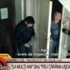

Cine crede că Gigi Becali schimbă prea des antrenorii echipei Steaua n-a auzit de Victor Ponta şi de guvernul României. 100 de zile de la preluarea puterii executive, un ministru schimbat la fiecare 13 zile. E media guvernării Uniunii Social Liberale, alianţă ale cărei partide au avut peste doi ani şi jumătate de Opoziţie pentru [...]
Nu ştim ce fel de poveşti mai aud tinerele vlăstare în zilele noastre. La drept vorbind, ne e şi cam jenă să întrebăm. Pe vremuri, basmele erau cu feţi-frumoşi, prinţese, regi, zmei şi oareşce încercări iniţiatice. E drept că Ileana Cosânzeana era descrisă ca fiind o fecioară blondă, frumoasă şi năzdrăvană, dar epicul părea decent, [...]

Îl mai ţineţi minte pe Nicolae Văcăroiu? Răutăcioşii îl alintă Nea Nicu Votcăroiu pe cel care a fost premierul României între 1992 şi 1996, perioadă în care inflaţia anuală depăşea limita de viteză admisă pe autostradă. Recordul a fost atins în 1993, când am avut o rată a inflaţiei de 256,1%! Emblematic pentru limita de [...]

Cum guvernanţii au rezolvat toate problemele sociale şi economice stringente, de luni începe marea numărătoare naţională. Obiectivul e clar: cel puţin 1.374.357 de români cu drept de vot trebuie ucişi, făcuţi să dispară sau trimişi în exil. Nu prea contează pretextul, important e să fie şterşi de pe listele electorale permanente. De ce număratul ăsta [...]

Peste un miliard de euro a cheltuit Banca Naţională a României în ultima lună în tentativa de a stabiliza cursul de schimb subminat de iresponsabilitatea politică. În ciuda acestui efort, leul a bătut toate recordurile negative din istorie. Între timp, România a organizat un referendum în baza unor liste electorale despre care înşişi organizatorii spun [...]

Câteva milioane de erori birocratice ale statisticilor bântuie România. Sunt fiinţe care vieţuiesc, respiră, muncesc, plătesc taxe şi consumă, dar care şi-au pierdut calitatea de persoane “vii şi reale” în faţa mai marilor zilei pentru că, din diverse motive, au decis să nu-şi exprime, cu ştampila pe hârtie, opinia într-o anume chestiune. “Ştim sigur că [...]

Coloneşti de Olt e numele celei mai în vogă staţiuni turistice româneşti, cel puţin în vara lui 2012. Harnicei populaţii de baştină i s-au adăugat încă pe atâţia turişti, dornici cu toţii să-şi exercite datoria civică. Astfel că prezenţa la referendum a fost de 200% în două dintre cele patru secţii de votare, media finală [...]

România are 5,53 milioane de pensionari în sistemul de asigurări sociale, conform datelor oficiale. Bugetarii din Administraţie, Educaţie şi Sănătate, fidelii prieteni ai USL, reprezintă cam 900.000 de voturi (sursa). Personalul forţelor armate şi cel asimilat acestora (MAI, MApN) e de aproximativ 250.000 români. 404.000 şomeri sunt înregistraţi în evidenţele ANOFM. Dacă facem adunarea, rezultă [...]

Vă mai amintiţi veselii ani de şcoală primară în care puneaţi ciungă pe scaunul profei de mate şi viermişori de jeleu în penarul surorii mai mici? Pe atunci ţâşnea direct pe primul loc în topul popularităţii cel care şterpelea caietul de teme al tocilarului clasei sau reuşea să lipească eticheta “Scuipaţi aici” pe spinarea directoarei. [...]

Alegătorul reprezentativ al USL nu e analfabet. Garantat! Simpatizantul tipic al Uniunii Social Liberale ştie să citească o întrebare cu zece cuvinte şi îi înţelege sensul. Sigur! Electorii anti-Băsescu nu sunt complet idioţi şi n-au nevoie de un desen care să-i înveţe să ştampileze căsuţa de sus, nu pe aia de jos. Categoric! Nu e [...]

Dacă-ţi aminteşti cum acţiona Securitatea ceauşistă sau măcar ai auzit poveşti despre vremurile dinainte de 1989, e imposibil să simţi fiori reci pe şira spinării când îl asculţi pe colonelul Mircea Dogaru, preşedintele SCMDRR (Sindicatul Cadrelor Militare Disponibilizate, în Rezervă şi în Retragere). Nu se poate să n-ai o tresărire atunci când citeşti aşa ceva: [...]

Prim-ministrul iubitor de Paste cu sos Copy zice că vila Dante, aflată în proprietatea statului, ar fi “cea mai luxoasă casă a unui demnitar pe care a văzut-o vreodată”. Deducem că Victor Ponta n-a fost niciodată în vizită la colegul său de birou din perioada guvernării PSD, Remus Truică. Adică n-a intrat nicicând aici, în [...]